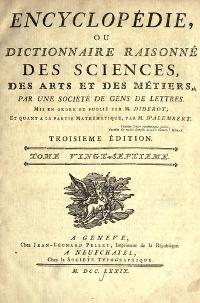

O Iluminismo, também conhecido como "Século das Luzes", foi um movimento intelectual europeu surgido na França no século XVII.
A principal característica desta corrente de pensamento foi defender o uso da razão sobre o da fé para entender e solucionar os problemas da sociedade.
Os iluministas exaltavam o poder da razão em detrimento ao da fé e da religião. Com isso, acreditavam que poderiam reestruturar a sociedade, ainda presa ao conhecimento herdado da tradição medieval.
Através da união de escolas de pensamento filosóficas, sociais e políticas, os iluministas buscaram estender a crítica racional em todos os campos do saber humano.
Assim, enfatizavam a defesa do conhecimento racional para desconstruir preconceitos e ideologias religiosas. Por sua vez, essas seriam superadas pelas ideias de progresso e perfectibilidade humana.
Em suas críticas, os pensadores iluministas argumentavam contra as determinações mercantilistas e religiosas.
Também foram avessos ao absolutismo e aos privilégios dados à nobreza e ao clero. Isso abalava os alicerces da estrutura política e social absolutista.
Desta maneira, filósofos como Diderot e D’Alembert buscaram reunir todo o conhecimento produzido à luz da razão num compêndio dividido em 35 volumes: a Enciclopédia (1751-1780).

Suas ideias se difundiram principalmente entre a burguesia, os quais detinham a maior parte do poder econômico. Entretanto, não possuíam nada equivalente em poder político e ficaram sempre à margem das decisões.
O iluminismo rejeitava a herança medieval. Por isso, passaram a chamar este período de "Idade das Trevas". Foram esses pensadores que inventaram a ideia que nada de bom havia acontecido nesta época.
Por isso, advogavam pela limitação dos privilégios do clero e da igreja; bem como o uso da ciência para questionar as doutrinas religiosas.
Economia
Em oposição ao Mercantilismo, o Estado deveria praticar o liberalismo. Ao invés de intervir na economia, o Estado deveria deixar que o mercado a regulasse. Essas ideias foram expostas, principalmente, por Adam Smith.
Política
Contrários ao Absolutismo, os iluministas afirmavam que o poder do rei deveria ser limitado por um conselho ou uma Constituição. Igualmente, os súditos deveriam ter mais direitos e serem tratados de forma igualitária.
Com isso queria se afirmar que todos deveriam pagar impostos e minorias como os judeus tinham que ser reconhecidos como cidadãos plenos.
As ideias iluministas se espalharam de tal modo que muitos governantes buscaram implantar medidas embasadas no iluminismo para modernizar seus respectivos Estados.
Isso acontecia sem abdicação de seu poder absoluto, mas apenas conciliando-o aos interesses populares. Deste modo, aqueles governantes faziam parte do Despotismo Esclarecido.
Os ideais iluministas tiveram serias implicações sociopolíticas. Como exemplo, o fim do colonialismo e do absolutismo e o liberalismo econômico, bem como a liberdade religiosa, o que culminou em movimentos como a Revolução Francesa (1789).
John Locke
John Locke é Considerado o “pai do Iluminismo”. Sua principal obra foi “Ensaio sobre o entendimento humano”, aonde Locke defende a razão afirmando que a nossa mente é como uma tábula rasa sem nenhuma ideia.
Defendeu a liberdade dos cidadãos e Condenou o absolutismo.
Voltaire
François Marie Arouet Voltaire destacou-se pelas críticas feitas ao clero católico, à inflexibilidade religiosa e à prepotência dos poderosos.
Montesquieu
Charles de Secondat Montesquieu em sua obra “O espírito das leis” defendeu a tripartição de poderes: Legislativo, Executivo e Judiciário.
No entanto, Montesquieu não era a favor de um governo burguês. Sua simpatia política inclinava-se para uma monarquia moderada.
Rousseau
Jean-Jacques Rousseau é autor da obra “O contrato social”, na qual afirma que o soberano deveria dirigir o Estado conforme a vontade do povo. Apenas um Estado com bases democráticas teria condições de oferecer igualdade jurídica a todos os cidadãos. Rousseau destacou-se também como defensor da pequena burguesia.
Quesnay
François Quesnay foi o representante oficial da fisiocracia. Os fisiocratas pregavam um capitalismo agrário sem a interferência do Estado.
Adam Smith
Adam Smith foi o principal representante de um conjunto de ideias denominado liberalismo econômico, o qual é composto pelo seguinte:
- o Estado é legitimamente poderoso se for rico;
- para enriquecer, o Estado necessita expandir as atividades econômicas capitalistas;
- para expandir as atividades capitalistas, o Estado deve dar liberdade econômica e política para os grupos particulares.
A principal obra de Smith foi “A riqueza das nações”, na qual ele defende que a economia deveria ser conduzida pelo livre jogo da oferta e da procura.